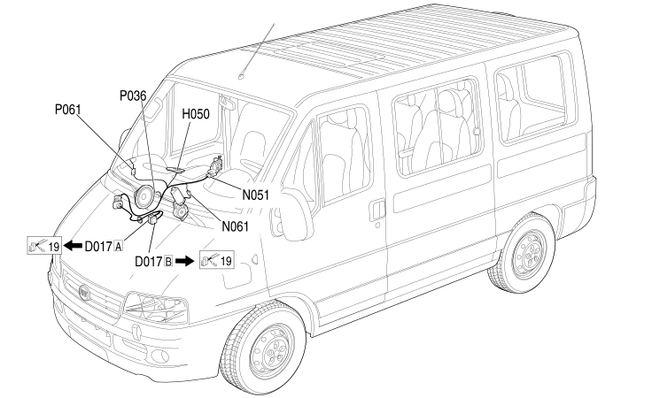

31 FRONT PASSENGER DOOR
- Path
- Electrical equipment > 2 WIRING > 31 FRONT PASSENGER DOOR
- Kind
- wiring harness
- Applies to
- all engines; all production periods
- Interactive page
- https://sloeber94.github.io/elrnDB-fDct/en/#/244002167
Applies to: all engines; all production periods

Topics that link to this page (13)
- P114 ANTENNA GSM (FRONT PASSENGER DOOR)
- P115 ANTENNA AUTORADIO (FRONT PASSENGER DOOR)
- D017A ADDITIONAL DASHBOARD/RIGHT FRONT DOOR COUPLING (FRONT PASSENGER DOOR)
- D017B ADDITIONAL DASHBOARD/RIGHT FRONT DOOR COUPLING (FRONT PASSENGER DOOR)
- D017B ADDITIONAL DASHBOARD/RIGHT FRONT DOOR COUPLING (FRONT PASSENGER DOOR)
- D167 COAXIAL CABLE FOR GSM AERIAL COUPLING (FRONT PASSENGER DOOR)
- H050 ELECTRIC WINDOW SWITCH ON FRONT PASSENGER'S DOOR (FRONT PASSENGER DOOR)
- N051 RIGHT FRONT DOOR LOCK GEARED MOTOR (FRONT PASSENGER DOOR)
- N061 RIGHT FRONT ELECTRIC WINDOW MOTOR (FRONT PASSENGER DOOR)
- P029 GPS AERIAL FOR NAVIGATOR (FRONT PASSENGER DOOR)
- P036 SPEAKER IN RIGHT FRONT DOOR (FRONT PASSENGER DOOR)
- P061 RIGHT EXTERNAL REAR VIEW MIRROR (FRONT PASSENGER DOOR)
- P111 RADIO/GSM AERIAL (FRONT PASSENGER DOOR)